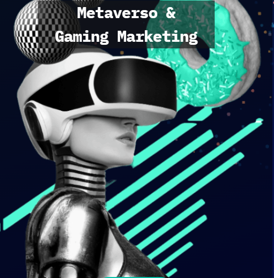
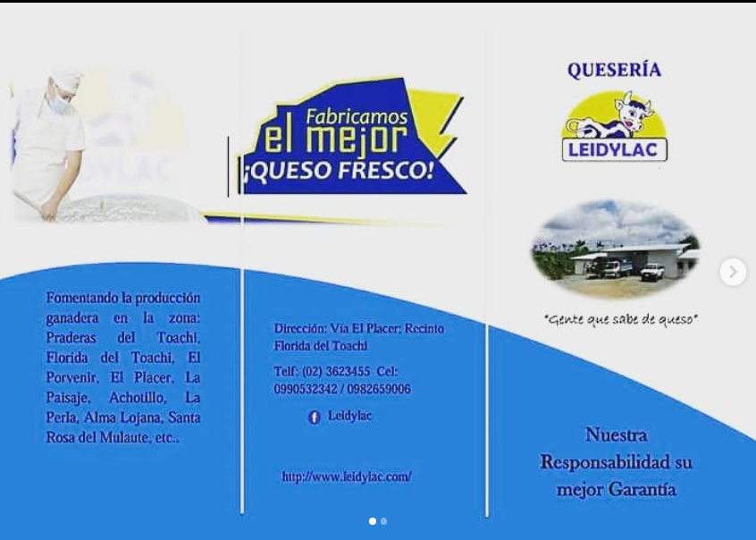
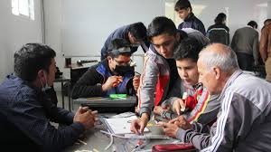

Proyecto Web Personal
Como parte de mi formación universitaria, desarrollé una página web personal utilizando HTML, CSS y diseño responsivo, con el objetivo de presentar mi portafolio profesional. Proyecto Web.
Gestión de Redes
Gestiono las redes sociales y la promoción digital del emprendimiento familiar de producción y venta de leche. Aplicando conocimientos en marketing digital, diseño gráfico y comunicación efectiva. Llamada Lácteos LEDYLAC.
Capacitación Digital en la Comunidad
Impartí talleres gratuitos sobre informática básica a jóvenes y adultos mayores, fomentando la inclusión digital en mi comunidad.
